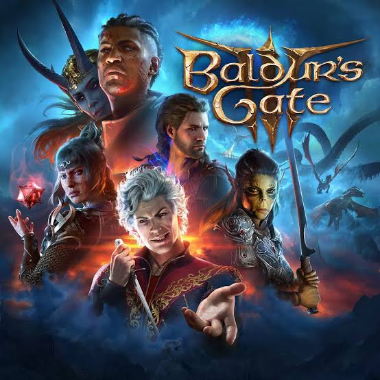

Il capolavoro di Larian Studios
Baldur's Gate 3 è un videogioco di ruolo (RPG) sviluppato e pubblicato dalla società belga Larian Studios nel 2023. Il titolo costituisce il terzo capitolo principale della serie Baldur's Gate ed è ambientato nell'universo fantasy dei Forgotten Realms, appartenente al mondo di Dungeons and Dragons. Il gioco utilizza una versione adattata delle regole della quinta edizione del celebre gioco di ruolo da tavolo e permette ai giocatori di esplorare un vasto mondo fantastico, interagire con numerosi personaggi e affrontare una storia caratterizzata da scelte narrative, combattimenti strategici e molteplici possibilità di sviluppo.
La produzione rappresenta il risultato della collaborazione tra Larian Studios e Wizards of the Coast, società proprietaria dei diritti editoriali di Dungeons and Dragons. Il progetto ha ottenuto un notevole successo commerciale e di critica, diventando uno dei videogiochi di ruolo più apprezzati degli ultimi anni e ricevendo numerosi riconoscimenti internazionali, tra cui il premio Gioco dell'anno ai The Game Awards 2023.

La realizzazione di Baldur's Gate 3 venne affidata a Larian Studios, azienda fondata nel 1996 in Belgio e conosciuta principalmente per la serie videoludica Divinity. L'idea di sviluppare un nuovo capitolo della saga era stata proposta alla Wizards of the Coast già nel 2014, ma il progetto iniziò a concretizzarsi soltanto negli anni successivi. I primi lavori di progettazione narrativa e sviluppo del gioco risalgono alla fine del 2016, mentre nel 2017 venne avviata ufficialmente la collaborazione tra le due società.
L'esistenza del progetto venne annunciata ufficialmente il 6 giugno 2019, durante il periodo dell'Electronic Entertainment Expo (E3). La produzione rappresentava un'importante evoluzione per la serie, rimasta senza un nuovo capitolo principale per quasi vent'anni. Gli sviluppatori decisero di utilizzare una versione adattata delle regole della quinta edizione di Dungeons and Dragons, cercando di trasferire le meccaniche del gioco da tavolo all'interno di un'esperienza videoludica.
Il gioco venne inizialmente distribuito in Accesso Anticipato (Early Access) il 6 ottobre 2020, esclusivamente su PC e successivamente anche su macOS. Questa fase consentì ai giocatori di provare una parte dell'avventura e fornire riscontri utili agli sviluppatori, che continuarono a modificare e ampliare il progetto nel corso degli anni.
La versione completa venne pubblicata il 3 agosto 2023 per PC, seguita dalle versioni per PlayStation 5 il 6 settembre, macOS il 22 settembre e Xbox Series X e Series S il 12 dicembre dello stesso anno.
La storia di Baldur's Gate 3 si svolge nei Forgotten Realms, una delle ambientazioni fantasy più conosciute di Dungeons and Dragons, e si colloca circa cento anni dopo gli eventi narrati nel secondo capitolo della serie. La vicenda prende avvio con il rapimento del protagonista da parte dei Mind Flayer, creature dotate di poteri psichici e conosciute anche come Illithid. Durante la prigionia, al protagonista viene impiantato nel cervello un parassita destinato a trasformarlo progressivamente in una di queste creature.
Dopo essere riuscito a fuggire, il protagonista intraprende un viaggio alla ricerca di una soluzione al contagio, incontrando altri individui che condividono la medesima condizione. Nel corso dell'avventura, il gruppo si trova coinvolto in una complessa vicenda che riguarda il culto dell'Assoluta, antiche divinità, poteri soprannaturali e il destino dell'intera regione.
La narrazione è caratterizzata da una forte componente decisionale: le scelte del giocatore possono modificare il comportamento dei personaggi, determinare l'esito di numerose missioni e influenzare profondamente lo sviluppo della storia. Sono presenti differenti percorsi narrativi e finali alternativi, rendendo possibile affrontare l'avventura in modi anche molto diversi.
Baldur's Gate 3 appartiene al genere dei giochi di ruolo a turni e combina esplorazione, dialoghi, combattimenti strategici e personalizzazione dei personaggi. All'inizio della partita è possibile creare un protagonista originale, scegliendone razza, classe, caratteristiche fisiche, abilità e background. In alternativa, il giocatore può utilizzare uno dei personaggi predefiniti disponibili, conosciuti come Origini, ciascuno caratterizzato da una storia personale e da particolari elementi narrativi.
Il sistema di combattimento utilizza una struttura a turni basata sulle regole di Dungeons and Dragons. Le azioni vengono determinate attraverso tiri di dado virtuali, modificatori statistici e capacità specifiche dei personaggi. L'ambiente circostante assume un ruolo importante durante gli scontri: è possibile sfruttare dislivelli, elementi naturali, oggetti e superfici per ottenere vantaggi tattici.
Un elemento centrale dell'esperienza è rappresentato dai compagni di avventura, personaggi controllati dall'intelligenza artificiale che possono unirsi al protagonista durante il viaggio. Ogni compagno possiede una propria personalità, una storia individuale e obiettivi specifici. Le relazioni sviluppate con questi personaggi possono influenzare i dialoghi, le missioni e persino alcuni sviluppi della trama, includendo la possibilità di instaurare rapporti sentimentali.
Il gioco può essere affrontato in modalità giocatore singolo oppure in modalità multigiocatore cooperativa, che consente a più utenti di partecipare alla stessa campagna e prendere decisioni condivise o indipendenti.
Al momento della pubblicazione, Baldur's Gate 3 ricevette un'accoglienza estremamente positiva da parte della critica specializzata e del pubblico. Tra gli elementi maggiormente apprezzati figuravano la profondità della narrazione, la libertà decisionale, la caratterizzazione dei personaggi e la varietà delle situazioni affrontabili durante l'avventura.
Il titolo ottenne un successo commerciale considerevole, raggiungendo milioni di giocatori in tutto il mondo e registrando numeri particolarmente elevati sulle piattaforme di distribuzione digitale. La sua popolarità contribuì inoltre a riportare l'attenzione internazionale sui giochi di ruolo tradizionali e sull'universo di Dungeons and Dragons.
Nel dicembre 2023 Baldur's Gate 3 venne premiato come Gioco dell'anno ai The Game Awards, ottenendo anche riconoscimenti in categorie dedicate alla narrazione, al design e alle interpretazioni dei personaggi. Nel 2024 ricevette ulteriori premi, tra cui quello per il miglior gioco ai BAFTA Games Awards e ai D.I.C.E. Awards.
Il successo del titolo ha consolidato la posizione di Larian Studios tra le principali società di sviluppo nel settore dei giochi di ruolo e ha dimostrato le potenzialità dell'adattamento videoludico delle meccaniche e delle ambientazioni di Dungeons and Dragons.
Baldur's Gate 3 rappresenta uno degli esempi più significativi di trasposizione videoludica di un gioco di ruolo da tavolo. La sua struttura, basata sulla libertà di scelta, sull'interazione tra personaggi e sulla possibilità di modificare profondamente lo sviluppo degli eventi, ha contribuito a rinnovare l'interesse verso il genere RPG.
L'opera ha inoltre ampliato la notorietà di numerosi elementi dell'universo dei Forgotten Realms, rendendo personaggi, creature e ambientazioni riconoscibili anche a un pubblico che non aveva mai avuto precedenti esperienze con Dungeons and Dragons.
Nel 2025 Larian Studios ha comunicato di non avere intenzione di sviluppare ulteriori espansioni narrative o un quarto capitolo della serie, preferendo concentrare le proprie risorse su nuovi progetti originali. Baldur's Gate 3 rimane tuttavia uno dei prodotti più rappresentativi della collaborazione tra Larian Studios e Wizards of the Coast, nonché uno dei titoli più importanti nella storia recente dei giochi di ruolo.